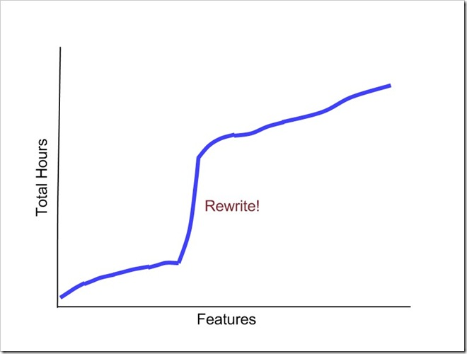
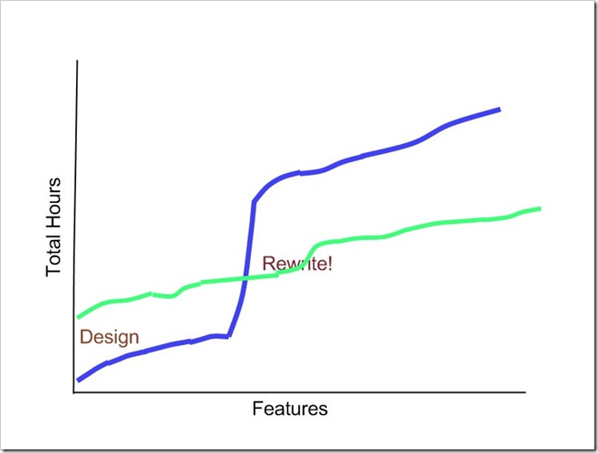

|
|
Archive for the ‘Processes’ Category
Monday, March 8th, 2010
This weekend I worked on the Factual language parser. I started with a brute-force recursive descent parser, but ended up with something more elegant. The final product expresses the intent better than the original code did. It is easier to maintain, and easier to extend. You can follow along with the changesets on Codeplex. Here’s how I did it.
Step 1: Make it work
The goal was to create a parser for a known language. It was not to create a framework for any language that you could throw at it. My constraints were well defined:
- Parse the Factual language
- Produce an Abstract Syntax Tree
- Work within an open source license
These constraints defined my solution. Since I am working on an open source project, I did not want to take a dependency upon a proprietary parser generator. And since I knew the language that I was parsing, I was able to choose parser patterns that fit that language.
It would be foolish to take on this project without knowing the theory of compiler design. I have seen too many ad-hoc parsers created by people who did not do their research. The mistakes that they made could have easily been avoided. “Make it work” does not mean throwing together the simplest thing that would work. It means think it through, but go straight at the problem. Persistence is no substitute for understanding.
Knowing the theory, I knew that my language as defined was LL(4). It is unambiguous with a lookahead of only 4 tokens. I also knew that with a slight modification, I could transform it into an LL(1) grammar. This kind of grammar is easily parsable using recursive descent.
I started with this unit test:
[TestMethod]
public void WhenNamespaceHasNoDot_NamepaceIsRecognized()
{
Parser parser = new Parser(new StringReader("namespace GameModel;"));
Namespace result = parser.Parse();
Pred.Assert(result.Identifier, Is.EqualTo("GameModel"));
Pred.Assert(result.LineNumber, Is.EqualTo(1));
}
I did not write this code, as some proponents of TDD would recommend:
public Namespace Parse()
{
return new Namespace("GameModel", 1);
}
Instead, I wrote this:
public Namespace Parse()
{
Consume();
Namespace namespaceNode = MatchNamespace();
return namespaceNode;
}
private Namespace MatchNamespace()
{
Token namespaceToken = Expect(Symbol.Namespace, "Add a 'namespace' declaration.");
if (Lookahead.Symbol != Symbol.Identifier)
throw new FactualException("Provide a dotted identifier for the namespace.", Lookahead.LineNumber);
string namespaceIdentifier = MatchDottedIdentifier();
Expect(Symbol.Semicolon, "Terminate the namespace declaration with a semicolon.");
return new Namespace(namespaceIdentifier, namespaceToken.LineNumber);
}
That first method would have made the test pass, but it represents none of the understanding of the problem space. I find it better to capture that understanding in code as soon as possible, rather than writing a foolish method that I will throw away later.
After getting it working, I had a suite of unit tests. Each subsequent step was performed while keeping that same test suite passing.
Step 2: Clean up the working code
It bothered me that MatchNamespace knew that MatchDottedIdentifier expected an Identifier. So I did a quick refactoring to move that knowledge closer to the right place.
private Namespace MatchNamespace()
{
...
if (!StartOfDottedIdentifier())
throw new FactualException("Provide a dotted identifier for the namespace.", Lookahead.LineNumber);
string namespaceIdentifier = MatchDottedIdentifier();
...
}
private bool StartOfDottedIdentifier()
{
return Lookahead.Symbol == Symbol.Identifier;
}
private string MatchDottedIdentifier()
{
StringBuilder result = new StringBuilder();
Token idenifier = Expect(Symbol.Identifier, "Begin with an identifier.");
result.Append(idenifier.Value);
...
}
Step 3: Find the patterns
After cleaning the code in a similar way in several places, I noticed that there were Start and Match pairs for almost every rule. I compared this with my knowledge of parsers, and found that it is a valid generalization.
In an LL(1) grammar, you can calculate the First and Follow sets of every production. The First set is the set of tokens that could appear at the beginning of the production. The Follow set is the set that could appear after the production has been reduced. I recognized that Start represented the First set. The Follow set is useful for generating the First set (First includes Follow if the production could be empty), but was not strictly required for my grammar.
Having discovered that pattern, I extracted a common interface (actually an abstract base class).
public abstract class Rule<T>
{
public abstract bool Start(Symbol symbol);
public abstract T Match(TokenStream tokenStream);
}
I implemented this interface with one derived class per production.
Step 4: Find the common intent
Several of the rules had a common structure. They each called a sequence of other rules in turn. Each time, they would check the Start, and then call Match. This commonality was not accidental. Each of these rules intended to represent a sequence. They only differed in which sequence, and what was done with it. So I factored out that intent.
public class RuleSequence3<T1, T2, T3, T> : Rule<T>
{
private Rule<T1> _rule1;
private Rule<T2> _rule2;
private string _error2;
private Rule<T3> _rule3;
private string _error3;
private Func<T1, T2, T3, T> _reduce;
public RuleSequence3(Rule<T1> rule1, Rule<T2> rule2, string error2, Rule<T3> rule3, string error3, Func<T1, T2, T3, T> reduce)
{
_rule1 = rule1;
_rule2 = rule2;
_error2 = error2;
_rule3 = rule3;
_error3 = error3;
_reduce = reduce;
}
public override bool Start(Symbol symbol)
{
return _rule1.Start(symbol);
}
public override T Match(TokenStream tokenStream)
{
T1 value1 = _rule1.Match(tokenStream);
if (!_rule2.Start(tokenStream.Lookahead.Symbol))
throw new FactualException(_error2, tokenStream.Lookahead.LineNumber);
T2 value2 = _rule2.Match(tokenStream);
if (!_rule3.Start(tokenStream.Lookahead.Symbol))
throw new FactualException(_error3, tokenStream.Lookahead.LineNumber);
T3 value3 = _rule3.Match(tokenStream);
return _reduce(value1, value2, value3);
}
}
Step 5: Express the intent
Now that rules can be built from the outside rather than coded from within, I had the opportunity to create a fluent interface. The code that uses this interface expresses the grammar of the language, rather than the steps required to parse it. The resulting code reads like a specification rather than an implementation.
// dotted_identifier -> identifier ("." identifier)*
// namespace_declaration -> "namespace" dotted_identifier ";"
var dottedIdentifier = Separated(
Terminal(Symbol.Identifier),
Symbol.Dot,
identifier => new StringBuilder().Append(identifier.Value),
(stringBuilder, identifier) => stringBuilder.Append(".").Append(identifier.Value));
var namespaceRule = Sequence(
Terminal(Symbol.Namespace),
dottedIdentifier, "Provide a dotted identifier for the namespace.",
Terminal(Symbol.Semicolon), "Terminate the namespace declaration with a semicolon.",
(namespaceToken, identifier, ignored) => new Namespace(identifier.ToString(), namespaceToken.LineNumber));
I find that this code is much easier to maintain and extend. The engineering of getting the parser right has been done once. Additional productions can take advantage of that engineering, so that simple mistakes are avoided. The goal was no reuse, but in the end I had created a reusable parser generator.
I might have been able to go straight there, but only at the risk of over engineering the solution. By refactoring my way from a working system toward an expression of intent, I was able to bring in just the theory that this particular problem requires. I know the limitations of my parser, and I can live within them.
Posted in Processes | No Comments »
Thursday, October 29th, 2009
The change in the solution should be proportional to the change in the problem.
Demoware
Have you ever attended one of these demos? "No code required!" "Drag and drop!" "It's automagic!"
The presenter points and clicks his way through a canned problem and creates a solution extremely rapidly. He data binds to an Access database. He lays out a report. He generates a web site directly from tables. Then he walks off stage.
If you've tried to use VB 6 data binding or Dynamic Data in a production system, you know the problem with demoware. It only works for a simple problem. Once the problem becomes complex, the demoware does not work. Your only recourse is to rewrite.
If you were to plot the total amount of work against features, you might see something like this:

The slope of the line before the rewrite, when you were relying upon automagic demoware, is fairly constant. Each new feature you added required you to drag a new column onto the designer. Not only is it easy to perform each change, each change is roughly the same size.
The slope of the line after the rewrite is also fairly constant. Here you are no longer using the automagic demoware framework. You have switched to a production-ready framework. Even though have to actually write code for each feature, the amount of code per feature is about the same. Moreover, since you've learned the new framework and the pattern that it demands, it's really not that hard to write that code. The slope is steeper than it was with the automagic demoware, but at least it's constant.
Up front design
Let's imagine that we skipped that demo and instead designed the infrastructure that our problem demands. Our total effort vs. features might look like this:

We spend significantly more hours before we can deliver the first feature. But once we do, the effort per new feature is constant. We avoid the big rewrite cliff because we create a framework that can handle all of features that we'll need to write. We don't know ahead of time what all those features will be, but we do know that our chosen framework will handle whatever we throw at it.
I evaluate everything from the principle of Proportional Change. When the problem changes a little, I should only need a small change in the solution. Big changes in the solution should only occur when there are big changes in the problem. I've found that many things violate this principle, not just demoware. Here's a few more examples:
- YAGNI - Yes, you really are gonna need it.
- Refactoring to a design - Small steps cannot always get you to your goal.
- Code generation
- Event-driven code
Posted in Processes | No Comments »
Thursday, April 9th, 2009
I used to work with engineers. These are people who, like me, think in equations. Until moving on to other domains, I never realized just how lucky I was to work with these people.
A common practice among the engineers was to try out new analysis methods in Excel. It was really easy to put in some data, graph it, write equations against it, and iterate over the problem. If you needed to find a root, "Goal Seek" was right there. If you needed something more powerful, you could drop down into VBA.
On more than one occasion, I received an Excel worksheet along with the instruction to "make the program do this." Those were some of the easiest specifications to follow. First, the math was right there; it just had to be translated from Excel to C++. Second, test data could be plugged into both systems, and their results compared. And third, if there was a problem, I could always go back to the engineer and ask questions while pointing to the worksheet.
Fast forward to today. I'm working for business people, not engineers. They use Excel, but not in the same way. They think in numbers, not equations. Their specifications are written in a different Office product, are less precise, and are not executable.
Turning it around
 Since my customer is not going to give me an Excel worksheet, I decided to give one to them. I received a Word document describing some complex interactions among several pieces of data. Some were coming from our ERP system (Baan), some from a site administrator, and some from the user. Many of the fields had different names, depending upon who was looking at it. Some of the rules were contradictory, others were ambiguous, and a few were missing. After several mutually frustrating conversations with the business trying to understand this spec, I took matters into my own hands. Since my customer is not going to give me an Excel worksheet, I decided to give one to them. I received a Word document describing some complex interactions among several pieces of data. Some were coming from our ERP system (Baan), some from a site administrator, and some from the user. Many of the fields had different names, depending upon who was looking at it. Some of the rules were contradictory, others were ambiguous, and a few were missing. After several mutually frustrating conversations with the business trying to understand this spec, I took matters into my own hands.
I created an Excel worksheet that has all of the inputs and outputs. These are organized according to the UI screens on which they appear, and are named according to the spec. Database and code names are not used.
Using this worksheet, the business can try out different scenarios and determine whether it does what they expect. If not, they can point to the worksheet and tell me what it should do. It may be asking too much for this group to fix the spreadsheet themselves, but at least we have a precise and executable communication tool.
Posted in Processes | No Comments »
Friday, March 28th, 2008
Posted in Agile, Processes, Shows | No Comments »
Thursday, March 13th, 2008
Despite all expectations, today was incredibly productive.
I've been meeting with the other partners in this large integration project to try to reach some consensus. The grand-client has scheduled these "joint application design sessions". Sounds suspiciously like design-by-committee.
Off to a bad start
I flew into town yesterday thinking that we were not far enough along in the project to have anything useful to share with each other. We're supposed to be jointly designing this application, but we haven't even nailed down the business requirements.
Because of a delayed flight, I missed yesterday's session and ended up in a project planning meeting (see yesterday's post). I heard from others present that there was not much content that pertained to us. Then I heard from the PM that we would be "observers" in the sessions for the next two days. That did not set the stage well.
Nevertheless, I decided to go in and make the most of it. Being the BA, I had with me a nice long list of open issues. I'm keeping these issues in an Access database tagged by functional area so I could quickly query for the questions I needed to ask at each point. Since the business requirements are not yet complete, most of these were business questions.
Unexpected progress
It turned out that we were better prepared than I thought. The other partners were similarly prepared, and everyone had business questions to get resolved. These are issues that have been open for months. We could not reach consensus with email or conference calls. But get everyone in a room, uncomfortable, with a limited amount of time, and things got done.
After closing many of my open issues, and assigning a few more to various people as action items, we were able to settle into more technical discussions. We agreed upon a high-level data interchange design and required data elements, with XML schemas to be provided within a week.
We were not mere observers. We had answers that they needed, and they had answers that we needed. And this was not design-by-committee. Instead of a lukewarm mixture of everybody's ideas, we each identified our own unique place in the system.
So don't underestimate the value of getting partners together. In just a few hours, you can accomplish what months worth of emails just can't get done. And even though design-by-committee yields mediocre results, integration of system requires some integration of teams.
Posted in Processes | No Comments »
Wednesday, March 12th, 2008
I'm traveling again, but this time not for fun like the ODC. This is work. I'm traveling to represent one of SSG's clients to one of their clients. The "grand-client", if you will. SSG has asked that I don't blog company names, but you'd know them if I told you.
A tale of two cultures
The grand-client has a very comprehensive software development lifecycle. It grew out of their Y2K effort. The process is heavy, but it helps them to mitigate risk.
My client, on the other hand, has been trying to define their process. Traditionally, they use RUP, but have had issues in the past with generating useful documentation from this process. They've evaluated agile, but could not get it to work within their corporate culture. Most recently, they've described their process as "agile RUP". I'm sure that such a combination could be achieved, but this seems more like a compromise than an actual plan.
This is a large integration project. The grand-client has identified several partners that will work together to create a new product offering, my client being just one of them.
The grand-client is running this project by tracking each of the partners with their own methodology. Instead of expecting deliverables from each provider at certain milestones, they are integrating the project plans.
Project management tooling
The project management tools couldn't be more different. The grand-client uses a centralized task management system. Engineers enter time against these tasks, and the tool compares those against the plan to automatically update the schedule.
On the other hand, my client manages everything with Microsoft Project. Engineers enter time against milestones, not tasks. The project is manually updated at status meetings, not automatically based on the time entry system.
The goal from the grand-client's point of view is to create a synergy of processes. They want to map all of the artifacts in the client's process into their own process. With that mapping, they can measure all partner's progress with their own tool, and identify each one's impact on other partner's schedules.
This might be a brilliant way of managing a project of this scale. Or it might be a train-wreck in progress. Either way, I expect to learn quite a bit from this engagement.
Posted in Processes | No Comments »
Tuesday, March 4th, 2008
I just left a project planning meeting in which Microsoft Project was projected on the wall. As often happens in these kinds of meetings, the project manager walked through the tasks and milestones and edited dates and dependencies as we talked. As also often happens, the participants zoned out while the PM tweaked the schedule.
To break from tradition, as well as monotony, the technical lead stood up and went to the whiteboard on the opposite side of the room. There he drew a calendar and laid out the plan. It was very telling that we turned our attention away from the Gantt chart and toward the calendar. Microsoft Project does not communicate, whereas a hand-drawn calendar does.
Once we all had agreed on the schedule, the lead turned it back over to the PM. The PM updated Project to match the calendar while the rest of us wrapped up. Because the lead took the initiative, we had a productive planning meeting. Microsoft Project may be a useful tool for project management, but it should never be projected.
Posted in Processes | 1 Comment »
Monday, January 28th, 2008
I'm currently recovering from the Infusion Sleepless Roadshow, where we collectively hacked SharePoint beyond recognition. I've recorded some interesting conversations, and I'll be bringing those to you very shortly. But in the mean time, let me tell you what I've learned about SharePoint.
You've probably used SharePoint as a document management system. It's a fantastic repository for Word documents. It handles organization, security, and versioning out-of-the-box. But for most organizations (including mine), that is all that SharePoint is used for: a shared folder with benefits.
What I learned this weekend is that Microsoft's vision for SharePoint is so much larger. It has a workflow engine that can track a work item through a long-running business process. It has Office integration beyond the publishing capabilities we've all used, including custom task panes and ribbons. And it has all the customizability that you need to create fantastic looking public-facing sites.
The problem is that not many people know how to do these things with SharePoint. Or, rather, that's the opportunity. This event demonstrates that it is possible to create a brand new web application overnight ... literally. And the people who can do that are in high demand.
Think differently
Before the competition, we had 12 hours of intense training. During this training, one thing became quite clear. SharePoint development is not like your typical application development. You have to approach the problem from a completely different angle.
In typical application development, you'll set up a code-build-deploy cycle from the beginning. Developers will go through several small iterations of this cycle every day. A slightly longer version of the cycle pushes weekly builds to QA. And an even longer cycle promotes releases to production.
In SharePoint, many of the development artifacts are in the site itself. You add custom lists to define new data types. You build workflows directly within the site. You create web part pages in place. And finally, you package all of this up as a template.
So just like a spreadsheet where cells contain either data or functions, code artifacts are intermingled with data. It is common practice to put pages into lists, along side documents and items. Furthermore, there is no apparent difference between the list and the type of data it contains. You add columns to the list in order to define its "type". Finally, you define workflows within a site so that they have access to those columns. It is difficult to separate code from data in order to deploy.
In search of the repeatable process
I like the repeatable process of the code-build-deploy cycle. During the training, there were glimpses of this cycle when they showed Visual Studio projects that produced WSP files. There is an event that you can handle within your code to provision a site upon deployment. If used properly, I'm sure that a repeatable process could be achieved.
During the competition, however, I found that this is not easy. I wasted three hours of our precious time fighting with Visual Studio, IIS, and SharePoint to get this process to work. I finally abandoned this effort in order to help my team.
So if you remember what SharePoint is good at, you can do quite well. Don't look to SharePoint as a typical development platform. It is a place where your application can grow up gradually over time. It can get your site up and running with a very small investment, and then expand it to add more features. Maybe that's not the "right" way to develop software, but it satisfies a business need. As G. K. Chesterton famously wrote: "Anything worth doing is worth doing badly."
Posted in Processes, SharePoint | 5 Comments »
Thursday, January 24th, 2008
Listen Now
Ivar Jacobson codified Use Case Analysis in 1986 as a way of expressing functional requirements. Since that time, the technique has been improved and formalized. It is now part of the Rational Unified Process.
Why should I write use cases?
- Use Cases help the systems analyst or software designer to understand the system under construction.
- Help customers understand the system being built. Users can validate that the use cases are correct.
- Use cases are an easy to understand and interpret way of communication the functionality of a system to an implementor.
What goes into a use case?
- The name of the use case
- An identification number that will uniquely identify the use case. This number WILL NOT CHANGE, even if the use case is modified or deleted. This is important for tracking history.
- Actor - What actor or actors are going to be the focus of this use case?
- Goal - What is the end result of this use case.
- Preconditions - What must already be true about the actor or system before this use case is valid.
- Triggers - What triggers this use case? A user inserting their ATM card? The predetermined nightly batch processing time? etc.
- The Success Path - What happens when everything goes right with this use case. This description should start with the trigger and tell the story of how the state of the target system changes.
- Alternate Paths - This section talks about what can go wrong and how the system will respond to those error conditions.
- Post Conditions - This describes what state the system will be in once the use case has been executed to completion.
- Business Rules - Call out any business rules that apply to this use case. (RE: I'm not sure about this one...I got this from Wikipedia...not sure I like it)
What is the scope of a use case?
How does a use case compare to a story in agile methodologies like Scrum?
Advantages of User Stories
Do I have to choose one or the other?
Should I strive for 100% feature coverage with use cases?
As a developer, if my company doesn't perform use case analysis, can I write use cases on my own?
When you have all of your use cases, what next? (discussion about dynamic behavior running through static strcuture)
Good Links:
Use Case Tutorial
Update
We've started a document template library. There you can find the Use Case template that we promised you.
Posted in Processes, Shows | No Comments »
Thursday, January 17th, 2008
Historic modeling is the technique of representing a solution as a history of discrete events. This differs from static modeling, which represents the solution as a snapshot. The static model is concerned with the state of the system, whereas the historic model is more concerned with how it got there.
A historic model can be represented in an Entity Fact diagram. This is analogous to the Entity Relationship diagram used in static models. The difference is that you represent historic facts instead of static relationships. Relationships can change over time, but facts are always true.
Automotive Wireless
I am currently working on an automotive wireless system that provides an excellent example of an Entity Fact diagram. This system tracks wireless devices such as OnStar modules that are installed in vehicles. The entities in this domain are things like the phone number (MDN/MIN), the wireless unit, the vehicle, the customer, and the service. We can draw an ERD to represent the relationships among these entities.

In this ERD, we represent entities as rectangles, relationships as diamonds, and properties as ellipses. We are particularly concerned with the status of a wireless account (active, suspended, inactive, etc.) and the status of a wireless device (scrap, replacement, defective, etc.) The account status is a property of the relationship between phone number and device.
In this ERD, relationships can come and go. A unit can be removed from a vehicle and a replacement installed. A customer can enroll in a service, and later cancel their subscription. In a typical static model, these relationships are created and destroyed to represent the current state.
Expand to an EFD
To model the system historically, we make note of all the events that could occur. Each of these events is one fact: it occurred at some point in time. Whether the effect of that event is still present is less important. The fact is, and always will be, that it happened.
The facts in this system are things like:
- An MDN/MIN was paired with a unit.
- The MDN/MIN pairing was removed (the account was closed).
- A customer took delivery of a vehicle.
- A customer enrolled in a service for a vehicle.
- A service enrollment was canceled.
There are many others as well. Here is the complete diagram.

You'll notice that these facts usually relate two or more entities. In fact, they usually create or destroy relationships between those entities. When one fact modifies the effect of another fact, it references the original. So, for example, an Unpairing destroys the relationship established by a Pairing.
Prerequisites
A fact cannot exist until its referenced entities exist. An MDN/MIN must be assigned by the phone company before it can be paired with the MEID of a device. Both the vehicle and the customer must exist before the customer can take delivery of the vehicle.
This prerequisite relationship is also true for facts. An MDN/MIN pairing must occur before they can be unpaired. A customer must take delivery of a vehicle before enrolling in services for that vehicle. So the arrows not only indicate references, but also define a partial order. The referenced fact must occur before the referencing fact.
Atomicity
Facts are either true or not. The event has either occurred or it hasn't. There is no intermediate state.
Notice the history formed by Manufacture and Replacement. A vehicle is manufactured with one unit. At some time later, that unit is replaced with another unit. The replacement destroys the vehicle-unit relationship created by the manufacture, and simultaneously creates another relationship. That replacement unit can later be replaced by yet another replacement unit, and so on.
The source of truth
This ERD is color coded to indicate the source of each of these facts. Blue facts come from the phone company, green from the device supplier, and red from the auto manufacturer. This helps us see interactions between various parties. We can see, for example, that the device supplier can't tell us that a pairing will not be used until the phone company tells us that it exists. This helps us see that we have to wait for the phone company to tell us that the number is paired before we send an unpairing request, thus avoiding a race condition.
Whether the program is written historically, an Entity Fact Diagram can help us capture important information. It is more complete than the ERD alone, as it shows all the ways in which relationships can come and go. It helps us communicate the order in which events can occur, and gives us guidance on transaction scope and system interactions.
Posted in Historic Modeling, Processes | No Comments »
|


{kind=link}
{kind=link}